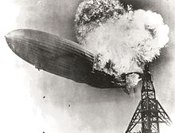

List of accidents and incidents involving comercial aircraft
This is a dynamic list and may never be able to satisfy particular standards for completeness. You can help by adding missing items with relible sources
This list of accidents and incidents involving commercial aircraft includes notable events. Entries in this list involve passenger or cargo aircraft that are operating commercially and meet this list's size criteria—passenger aircraft with a seating capacity of at least 10 passengers, or commercial cargo aircraft of at least 20,000 lb. The list is grouped by the year in which the accident or incident occurred.
July 21 – The Goodyear dirigible Wingfoot Air Express caught fire and crashed into the Illinois Trust and Savings Building in Chicago, Illinois, while carrying passengers to a local amusement park, killing thirteen people: three out of the five on board and ten others on the ground, with 27 others on the ground being injured.
August 2 – A Caproni Ca.48 crashed at Verona, Italy, during a flight from Venice to Taliedo, Milan, killing all on board (14, 15, or 17 people, according to different sources).
1920
December 14 – A Handley Page O/400 hit a tree and crashed at Golders Green, London, after failing to gain height following takeoff, killing four out of eight on board.
1922
March 31 – A Beijing-Han Airlines Handley Page O/7 hit trees and crashed while landing at Beijing Nanyuan Airport, killing all 14 on board in China's first fatal aviation accident.
April 7 – In the Picardie mid-air collision, a De Havilland DH.18A, G-EAWO, operated by Daimler Hire Ltd., collided with a Farman F.60 Goliath, F-GEAD, operated by Compagnie des Grands Express Aériens (CGEA), over the Thieulloy-St. Antoine road near Picardie, France, killing all seven people on both aircraft. This is the first mid-air collision of two airliners.
1923
January 13 – An Aeromarine 75 seaplane of Aeromarine West Indies Airways, Columbus, rapidly sank after a botched ditching in the Straits of Florida north of Havana, Cuba, leading to the deaths of four passengers out of the nine occupants in the first airliner disaster of American aviation.
May 14 – An Air Union Farman F.60 Goliath crashed near Monsures, Somme, France, due to the structural failure of a wing, killing all six on board.
August 27 – An Air Union Farman F.60 Goliath crashed near East Malling, Kent, England, due to an engine failure, and the passengers misunderstanding given instructions, killing one of 13 on board.
September 14 – A Daimler Airway de Havilland DH.34 crashed at Ivinghoe, Buckinghamshire, England, after stalling while attempting an emergency landing, killing all five on board
1924
December 24 – An Imperial Airways de Havilland DH.34 crashed near Purley, Surrey, England, due to a stall during an attempted emergency landing in response to an unknown mechanical defect. All eight on board were killed.
1926
August 18 – An Air Union Blériot 155 crashed during a failed emergency landing attempt at College Farm in Aldington, Kent, England, after experiencing an engine failure. Two of the 15 on board were killed on impact and the pilot died of his injuries one day later.
October 2 – An Air Union Blériot 155 crashed at Leigh, Kent, England, after the aircraft caught fire in mid-air during an attempted emergency landing at Penshurst Airfield, killing all seven on board; this was the first in-flight fire to occur on an airliner.
1927
August 22 – A KLM Fokker F. VIII crashed near Sevenoaks, Kent, England, due to a structural failure of the tailfin, killing one of 11 on board.
1929
June 17 – An Imperial Airways Handley Page W.10 ditched in the English Channel due to an engine failure, killing seven of the 13 on board.
September 6 – An Imperial Airways de Havilland Hercules crashed whilst landing at Jask Airport, Iran, killing three of the five occupants on board.
November 6 – A Luft Hansa Junkers G 24 crashed near Marden Park in Godstone, Surrey, England, killing seven of the eight occupants on board.
1930s
1930
February 10 – An Air Union Farman F.63 Goliath crashed during an emergency landing at Marden Airfield, Marden, Kent, following failure of the right tailplane, killing two of the six on board.
October 5 – On its maiden voyage from the United Kingdom to British India, the British civil airship R101 crashed and burned in Allonne, Oise, France, while flying at low altitude at night in a rainstorm, killing 48 out of 54 on board, the worst civil airship disaster in history.
1931
March 21 – An Australian National Airways Avro 618 Ten, Southern Cloud, disappeared in severe weather on a flight from Sydney to Melbourne, killing all eight on board in Australia's first significant airline disaster; the crash site in the Snowy Mountains remained undiscovered until 1958.
March 31 – A Transcontinental & Western Air Fokker F-10 Trimotor crashed near Bazaar, Kansas, after a wing broke off in flight, killing all eight aboard, including University of Notre Dame football coach Knute Rockne.
1933
March 28 – The 1933 Imperial Airways Diksmuide crash: An Armstrong Whitworth Argosy II caught fire in mid-air and crashed near Diksmuide, Belgium in the first suspected case of air sabotage; all 15 on board were killed.
December 30 – In the 1933 Imperial Airways Ruysselede crash in Belgium, an Avro Ten struck a radio mast, killing all 10 on board.
1934
February 23 – A United Air Lines Boeing 247 crashed into a Utah canyon in bad weather, killing all eight on board.
May 9 – An Air France Wibault 282T crashed into the English Channel off Dungeness, Kent, killing all six on board.
July 27 – A Swissair Curtiss T-32 Condor II crashed near Tuttlingen, Germany, after a wing separated in a thunderstorm, killing all 12 passengers and crew on board.
October 2 – A Hillman's Airways de Havilland Dragon Rapide crashed into the English Channel off Folkestone, Kent, due to pilot error, killing all seven on board.
December 20 – A KLM Douglas DC-2 crashed in the iraqi desert while en route from Amsterdam to Batavia, Dutch East Indies. All seven people onboard were killed.
1935
May 6 – TWA Flight 6, a Douglas DC-2 operating a multi-leg flight from Los Angeles, California, to Newark, New Jersey, United States, crashed on farmland near Atlanta, Macon, or Kirksville, Missouri, due to poor visibility and depleted fuel; five of the 13 on board were killed, including Senator Bronson M. Cutting.
October 7 – United Air Lines Trip 4, a Boeing 247D flying from Salt Lake City, Utah, to Cheyenne, Wyoming, United States, crashed near Silver Crown, Wyoming, due to pilot error; all 12 people on board died.
December 10 – A SABENA Savoia-Marchetti S.73 crashed near Tatsfield, Surrey, England, due to pilot error, while en route from Brussels Airport, Belgium, to Croydon Airport in South London; all 11 people on board died in the accident.
1936
January 14 – American Airlines Flight 1, a Douglas DC-2, crashed into a swamp near Goodwin, Arkansas for reasons unknown, killing all 17 passengers and crew on board.
April 7 – TWA Flight 1, a Douglas DC-2, crashed near Uniontown, Pennsylvania, United States, due to pilot error, killing 12 of the 14 passengers and crew aboard.
June 16 – In the Havørn Accident, a Norwegian Air Lines Junkers Ju 52 crashed into Lihesten mountain in Hyllestad, Norway, killing all seven on board.
August 5 – Chicago and Southern Flight 4, a Lockheed Model 10 Electra, crashed after takeoff due to pilot error, killing all eight on board.
December 9 – A KLM Douglas DC-2 crashed on takeoff from Croydon Airport, England; 15 of 17 on board died.
December 27 – United Airlines Trip 34, a Boeing 247, crashed at Rice Canyon (near Newhall, California, United States) due to pilot error, killing all 12 on board.
1937

Deutsche Zeppelin-Reederei Hindenburg bursting into flames, 1937
January 12 – Western Air Express Flight 7, a Boeing 247, crashed into a mountain near Newhall, California, United States. Five of the 13 people aboard died, including famed adventurer, author and filmmaker, Martin Johnson.
February 19 – An Airlines of Australia Stinson Model A suffered a controlled flight into terrain in Queensland, killing four of the seven people on board.
March 25 – TWA Flight 15A, a Douglas DC-2, crashed in Clifton, Pennsylvania due to ice accumulation. All 13 passengers and crew were killed.
May 6 – The Zeppelin Hindenburg burst into flames and crashed while attempting a landing at Naval Air Engineering Station, Lakehurst, New Jersey, United States; of the 97 people on board, 35 were killed; one person on the ground also died.
November 16 – The 1937 Sabena Junkers Ju 52 Ostend crash killed all 11 on board, including the Grand Duke Georg Donatus and Grand Duchess Cecilie of Hesse.
1938
January 10 – Northwest Airlines Flight 2, a Lockheed L14H Super Electra, crashed near Bozeman, Montana, United States, killing all 10 on board; the machine with which the manufacturer measured component vibration is found to be inaccurate, causing the aircraft to be more prone to flutter than anticipated.
January 11 – Pan American World Airways Flight 1, a Sikorsky S-42 flying boat named the Samoan Clipper, exploded in mid-air over Pago Pago, American Samoa, killing all seven on board.
March 1 – TWA Flight 8, a Douglas DC-2, disappeared on a flight from San Francisco to Winslow, Arizona; the aircraft is found three months later on a mountain in Yosemite National Park; all nine on board die.
July 28 – Pan American World Airways Flight 229, a Martin M-130 flying boat named the Hawaii Clipper, disappeared over the Pacific Ocean westbound from Guam to Manila with 15 on board.
August 24 – The Kweilin, a Douglas DC-2 operated by China National Aviation Corporation, was shot down by Japanese military aircraft killing 14 of the 17 people on board. It was the first shootdown of a civilian airliner.
October 25 – Kyeema, an Australian National Airways Douglas DC-2, crashed in heavy fog into Mount Dandenong in Victoria, Australia, killing all 18 people on board.
November 4 – In the 1938 Jersey Airport disaster, a Jersey Airways de Havilland DH.86 crashed on take-off from Jersey Airport due to pilot error; all 13 passengers and crew lose their lives as well as one person on the ground.
1939
January 13 – Northwest Airlines Flight 1, a Lockheed L14H Super Electra, crashed on descent to Miles City, Montana, United States, after an intense fire breaks out in the cockpit due to a fuel leak from the aircraft's cross-feed fuel valve; all four on board are killed.
January 21 – An Imperial Airways flying boat ditched in the North Atlantic, 285 miles (459 km) southeast of New York, due to loss of power; the aircraft later sinks and three of the 12 on board die.
August 13 – A Pan Am Sikorsky S-43 crashed into Guanabara Bay, Brazil, due to loss of control following engine failure, killing 12 of the 14 on board.